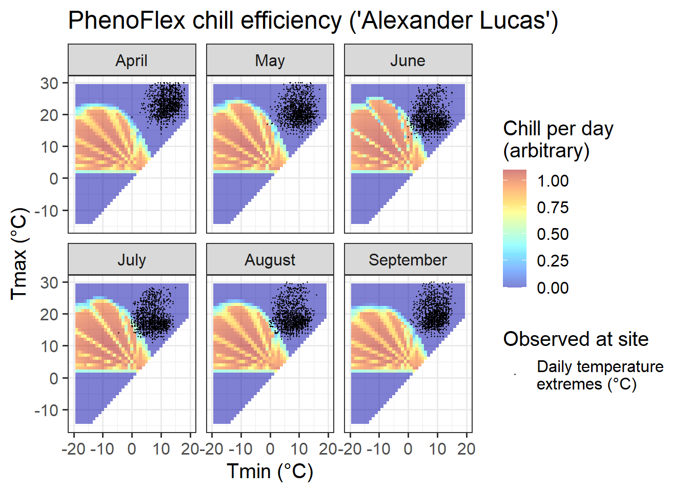

Chapter 26 The PhenoFlex model - a second look
1. Make chill and heat response plots for the ‘Alexander Lucas’ PhenoFlex model for the location you did the earlier analyses for.
First we need to set some parameters for the generation of the different temperatures. In the case of South Africa, we set the latitude to 33.95° South.
PhenoFlex_parameters_Alex <- read_tab("data/PhenoFlex_parameters_Alexander_Lucas.csv")[,2]
latitude<-coords[2]
#month_range<-c(10,11,12,1,2,3)
month_range=c(4,5,6,7,8,9)
Tmins=c(-20:20)
Tmaxs=c(-15:30)
mins<-NA
maxs<-NA
chill_eff<-NA
heat_eff<-NA
month<-NAGrowing Degree Hour Model
GDH_response<-function(T, par)
{Tb<-par[11]
Tu<-par[4]
Tc<-par[10]
GDH_weight <- rep(0, length(T))
GDH_weight[which(T >= Tb & T <= Tu)] <-
1/2 * (1 + cos(pi + pi * (T[which(T >= Tb & T <= Tu)] - Tb)/(Tu - Tb)))
GDH_weight[which(T > Tu & T <= Tc)] <-
(1 + cos(pi/2 + pi/2 * (T[which(T > Tu & T <= Tc)] -Tu)/(Tc - Tu)))
return(GDH_weight)
}With the parameters set, we can calculate the model sensitivity to our generated temperature dataframe. The result is saved to be imported later.
for(mon in month_range)
{
weather<-make_all_day_table(data.frame(Year=c(2001,2001),
Month=c(mon,mon),
Day=c(1,days_in_month(mon)),
Tmin=c(0,0),
Tmax=c(0,0)))
for(tmin in Tmins)
for(tmax in Tmaxs)
if(tmax>=tmin)
{
weather$Tmin<-tmin
weather$Tmax<-tmax
hourtemps<-stack_hourly_temps(weather,
latitude=latitude)$hourtemps$Temp
chill_eff<-c(chill_eff,
tail(PhenoFlex(temp=hourtemps,
times=c(1: length(hourtemps)),
A0=PhenoFlex_parameters_Alex[7],
A1=PhenoFlex_parameters_Alex[8],
E0=PhenoFlex_parameters_Alex[5],
E1=PhenoFlex_parameters_Alex[6],
Tf=PhenoFlex_parameters_Alex[9],
slope=PhenoFlex_parameters_Alex[12],
deg_celsius=TRUE,
basic_output=FALSE)$y,1)/
days_in_month(mon))
heat_eff<-c(heat_eff,
tail(cumsum(GDH_response(hourtemps,
PhenoFlex_parameters_Alex)),1)/
days_in_month(mon))
mins<-c(mins,tmin)
maxs<-c(maxs,tmax)
month<-c(month,mon)
}
}
results<-data.frame(Month=month,Tmin=mins,Tmax=maxs,Chill_eff=chill_eff,Heat_eff=heat_eff)
results<-results[!is.na(results$Month),]
write.csv(results,"data/model_sensitivity_PhenoFlex.csv")model_sens_PhenoFlex <- read.csv("data/model_sensitivity_PhenoFlex.csv")
CapeTown_weather <- read_tab("data/CapeTown_chillR_weather.csv")
chill_model_sensitivity_table = model_sens_PhenoFlex
temperatures = CapeTown_weather
temp_model = temp_model="Chill_eff"
#month_range=c(10,11,12,1,2,3) #!
month_range=c(4,5,6,7,8,9)
Tmins=c(-20:20)
Tmaxs=c(-15:30)
legend_label="Chill per day \n(arbitrary)"cmst<-chill_model_sensitivity_table
cmst<-cmst[which(cmst$Month %in% month_range),]
cmst$Month_names<- factor(cmst$Month, levels=month_range,
labels=month.name[month_range])
DM_sensitivity<-ggplot(cmst,aes(x=Tmin,y=Tmax,fill=.data[[temp_model]])) +
geom_tile() +
scale_fill_gradientn(colours=alpha(matlab.like(15), alpha = .5),
name=legend_label) +
xlim(Tmins[1],Tmins[length(Tmins)]) +
ylim(Tmaxs[1],Tmaxs[length(Tmaxs)])
temperatures<-
temperatures[which(temperatures$Month %in% month_range),]
temperatures[which(temperatures$Tmax<temperatures$Tmin),
c("Tmax","Tmin")]<-NA
temperatures$Month_names <- factor(temperatures$Month,
levels=month_range, labels=month.name[month_range])
DM_sensitivity +
geom_point(data=temperatures,
aes(x=Tmin,y=Tmax,fill=NULL,color="Temperature"),
size=0.2) +
facet_wrap(vars(Month_names)) +
scale_color_manual(values = "black",
labels = "Daily temperature \nextremes (°C)",
name="Observed at site" ) +
guides(fill = guide_colorbar(order = 1),
color = guide_legend(order = 2)) +
ylab("Tmax (°C)") +
xlab("Tmin (°C)") +
theme_bw(base_size=15) +
ggtitle("PhenoFlex chill efficiency ('Alexander Lucas')")